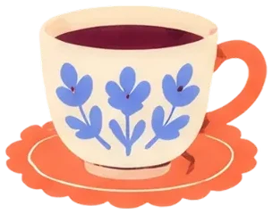

Elementos
Tudo o que se usa para montar uma peça. Aqui se vê e se aprende a usar; o arquivo vem da pasta de entrega.
Formas e abstratos 43 prontos
SVG, troca de cor.

Desenhos de objetos 48 desenhos
Livro, xícara, óculos, flores e mais.
Rabiscos e destaques 92 prontos
Setas, brilhos, estrelas, sublinhados e carinhas, em uma cor só.
Alfabeto a receber
Letras recortadas de revista, para montar palavras.
Molduras e recortes a receber
Polaroids, janelas, recortes.

Papel e fita a receber
Recortes de papel, fita, clipe.
Fundos de post 8 fundos
Xadrez e listras desenhados à mão, para base dos posts.
Padrões e texturas 3 sobreposições
Xadrez, listra, bolinha, papel.
Como usar os elementos
Os elementos são uma caixa de ferramentas, não uma lista de coisas a pôr. Nem toda peça leva elementos, e quando leva, raramente leva todos. Seis jeitos de usar:
Grande ao fundo
Uma forma enorme, cortada pela borda, quase uma padronagem. Com grão de papel por cima, como na arte do amigo oculto (aba Oficina). Dá textura sem virar figurinha.
Tom sobre tom
O elemento numa cor vizinha do fundo. Aparece sem pesar, e o texto continua mandando.
Um só, pontual
Um ou dois elementos pequenos, como um toque. O resto da peça fica calmo.
Figurinha
Desenho ou elemento recortado com borda branca, como um adesivo. É um dos usos, e só às vezes.
Rabisco de destaque
Seta, sublinhado, brilho ou estrelinha, em uma cor só, para chamar o olho para uma informação. Um ou dois por peça, como caneta de caderno.
Fundo de verdade
Xadrez ou listra desenhados à mão. O texto vai sobre um papel, nunca direto no padrão.